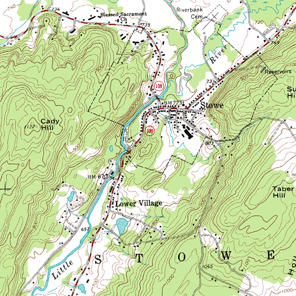
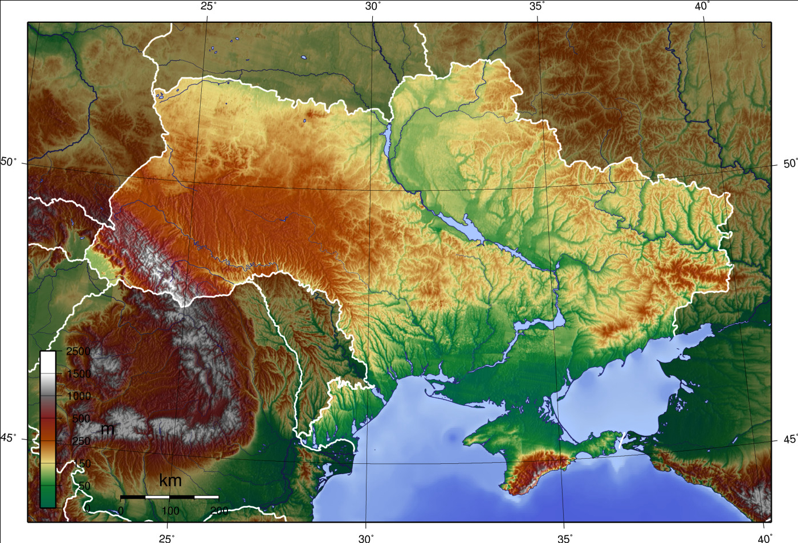

Назви три речі, які розповідає карта.
Зелений колір — це завжди ліс?
Уяви, що на карті бачиш зелену ділянку в пустелі. Чи справді там дерева? Обери гіпотезу.
🌍 Від супутника до карти
Подивись на Землю трьома способами. Супутниковий знімок показує поверхню, фізична карта — висоти та глибини, а план міста — вулиці, будівлі та дороги.

Знайди Карпати й низовину біля Чорного моря. Порівняй колір поверхні.

Знайди круглі поля. Червоне тут — рослинність у спеціальному режимі знімання, а не висота чи пожежа.

Знайди лінійні та точкові знаки. Які деталі тут є, але їх немає на карті всієї Землі?
🔎 Карта Запоріжжя
© OpenStreetMap contributors · Відкрити карту. Знайди Дніпро, Хортицю, міст та велику дорогу. Як карта відрізняє воду від дороги?

Знайди вершину на фізичній карті України. Яким знаком позначають вершини?

Знайди Дніпро. Яка ознака на карті допоможе відрізнити острів від півострова?

Чи означає зелена рослинність на фото, що на фізичній карті гори будуть зеленими?

Яка карта допоможе дізнатися висоту поля, а яка — що на ньому вирощують?
🧩 Збери легенду карти
Визнач, який умовний знак відповідає об’єкту. Це тренувальна легенда — у справжньому атласі обов'язково дивись на його власні позначення.
Місія «Знайди об’єкт»
У цій навчальній схемі натисни на потрібний об’єкт. Уважно читай завдання над картою.
🏔️ Як гора перетворюється на карту?
Модель одного умовного пагорба. Чим вище умовний горизонтальний зріз, тим меншою стає його замкнена лінія. На топографічній карті такі лінії — горизонталі.
Порівняй зрізи 100 і 400 м. Як змінюється розмір лінії? Чому горизонталі на реальній карті можуть бути неправильної форми?
🎬 Дві експедиції у світ карт
Тетяна Черепня — географічні карти ↗
Знайди приклад умовного знака й поясни його призначення.
Додатковий атлас. Основний маршрут 35 хв: 0–4 гіпотеза, 4–12 дві реальні карти, 12–20 легенда й пошук, 20–30 модель та пояснення, 30–35 власна карта. Решта матеріалів і тест — для домашнього опрацювання.
4–12 хвСправжній атлас

Знайди Карпати, Дніпро, Чорне море. Якими кольорами й знаками їх показано?

Відкрити реальну топографічну карту · Google Earth: супутниковий вигляд

Який знак покаже річку?

Чи досить одного кольору, щоб побачити круті схили?

Чим супутниковий вигляд відрізняється від карти висот?
Місія: острів картографів
Це авторська навчальна схема, а не справжня місцевість.
0–200 м · 200–500 м · понад 500 м · синя лінія — річка · пунктир — дорога · точка — поселення · трикутник — вершина.
Висота над рівнем моря
Знайди висоту 180 м і 820 м. Чи може зелена точка бути вище за іншу зелену?
Секрети картографа
1. Назва
Пояснює, про що карта: рельєф, погода, населення чи інше.2. Легенда
Словничок умовних знаків і кольорів. Кожна карта має власну легенду.3. Точкові знаки
Показують розташування об’єкта: міста, вершини, джерела.4. Лінійні знаки
Передають протяжність: річки, дороги, кордони.5. Площинні знаки
Показують території: водойми, ліси, області. На фізичній карті колір часто передає висоту або глибину.6. Масштаб і напрямки
Масштаб допомагає визначати відстані. Орієнтуйся за стрілкою півночі, якщо вона є.Відеолабораторія
Переглянь фрагмент про легенду, знайди приклади трьох типів знаків. Відкрити відео. Додатково: географічні карти (Тетяна Черепня).
Створи власну карту
Обери знак, натисни на клітинку. Познач річку (мінімум три сусідні клітинки), поселення, вершину та дорогу. Це умовний план-схема, а не точний географічний план.
Домашня місія • §24
Опрацюй §24; завершити опис території за картою, сформулювати висновок. Тест. Читати §24 онлайн (Біда, Гільберг, Колісник).
Перед тестом переглянь відео про умовні знаки вище. Зроби скриншот своєї карти та результату.